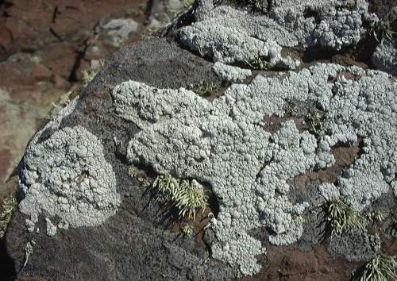

These are the crusty (crustose), slow growing lichens found in the upper region of the splash zone. In fact this is the first sub-zone of the shore. Below this is another band of lichens often refferred to as grey, consisting of Ramalina. The main species living in this top layer are Lecanora, Ochrolechia and Tephromela

Lecanora is an encrusting form, developing a pale grey warty growth over rocks. It can be distinguished by the black discs of spore-producing apothecia, the fruiting bodies. Crust-like or crustose lichens lack the organised thallus of other lichens. The matrix of the lichen is the fungal hyphae which are compressed, especially at the surface. In the middle algal cells are entrapped amongst the hyphae. At the base the hyphae grow into the crevices of the substrate to anchor it in place. The matrix is almost powdery and in Lecanora it is very thick.
Lichens are a unique group being a symbiotic relationship between a fungus (called the mycobiont) and an alga (called the phycobiont). The former is the dominant component and the classification is based around it. The body, or thallus, has a characteristic growth form. It is quite slow growing and cannot cope with the grazing by periwinkles. This makes it most abundant higher in the splash zone where the salt spray and bird droppings make life too inhospitable for life except the lichen. The symbiotic relationship helps to provide a partnership to allow this survival. The fungus gives the attachment to the rock and acts like a sponge to hold the moisture whilst the alga carries out photosynthesis. Lichens are an important group to cause chemical weathering of rocks. Lecanora atra has been found to contain the magnesium oxalate, glushinskite, in the outer layers of its crust. When washed out by rain water it produces considerable disintegration of the rock.

Ochrolechia
A terrestrial species that can tolerate salt spray. The fruiting bodies are said by deranged people to resemble crab's eyes so in their madness they sometimes call this the crab's eye lichen.
See also Ramalina and the Yellow/Orange Lichens
Looking for a next step?
The FSC offers a range of publications, courses for schools and colleges and courses for adults, families and professionals that relate to the seashore environment. Why not find
out more about the FSC?

FEEDBACK
Do you have any questions?
Copyright © 2008 Field Studies Council

Creative Commons Attribution-Noncommercial-No Derivative Works 3.0 Licence .
Site Statistics by Opentracker
{kind=link}